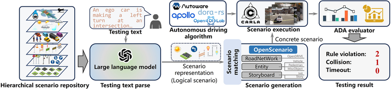
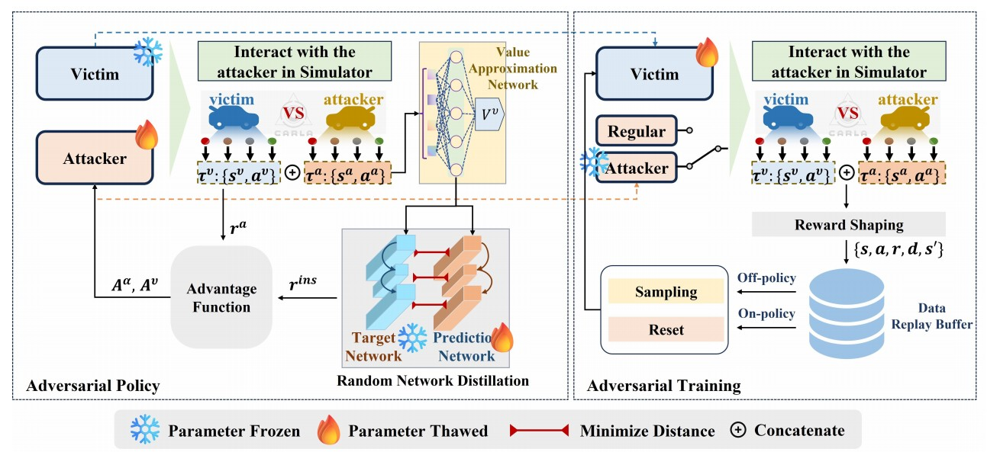
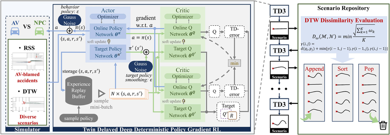
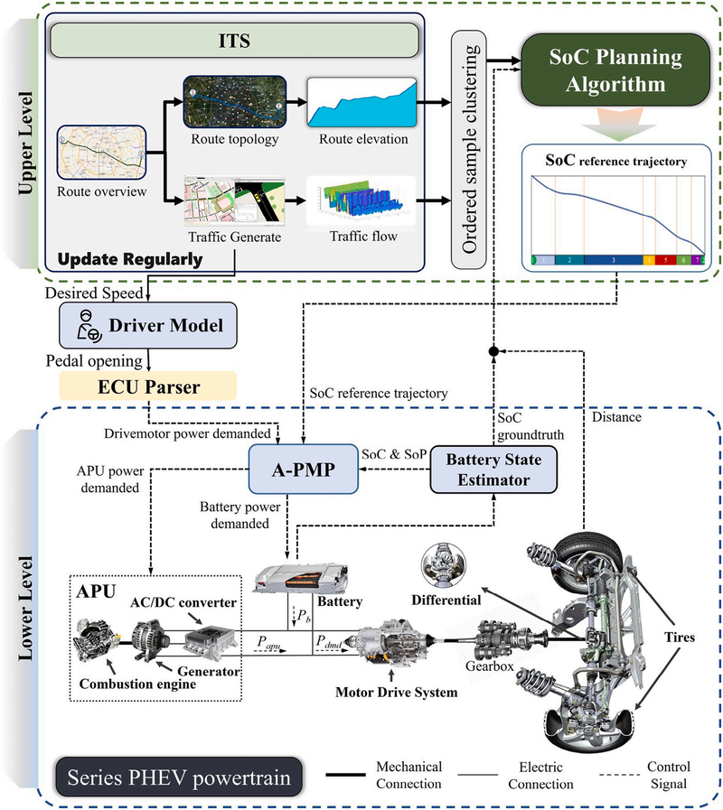
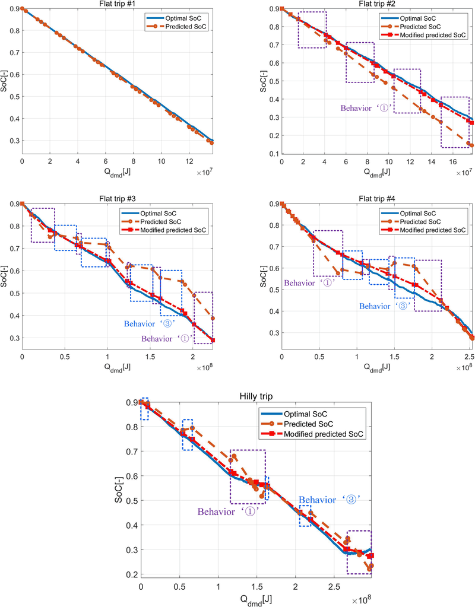

I am a Ph.D. candidate at the State Key Laboratory of Intelligent Transportation Systems, Beihang University, supervised by Prof. Zhiyong Cui and Prof. Yilong Ren. Prior to that, I received my Master's and Bachelor's degrees from Hunan University.
My research focuses on autonomous driving, simulation scenario generation through AI technologies. I am dedicated to developing safe, reliable, and efficient intelligent transportation systems through adversarial learning.




